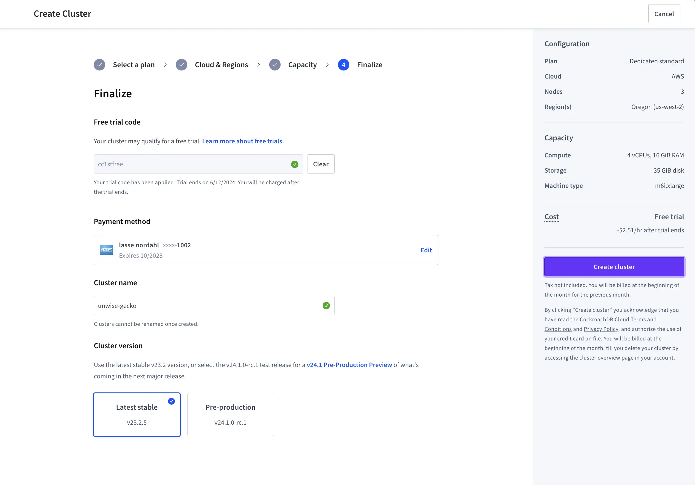
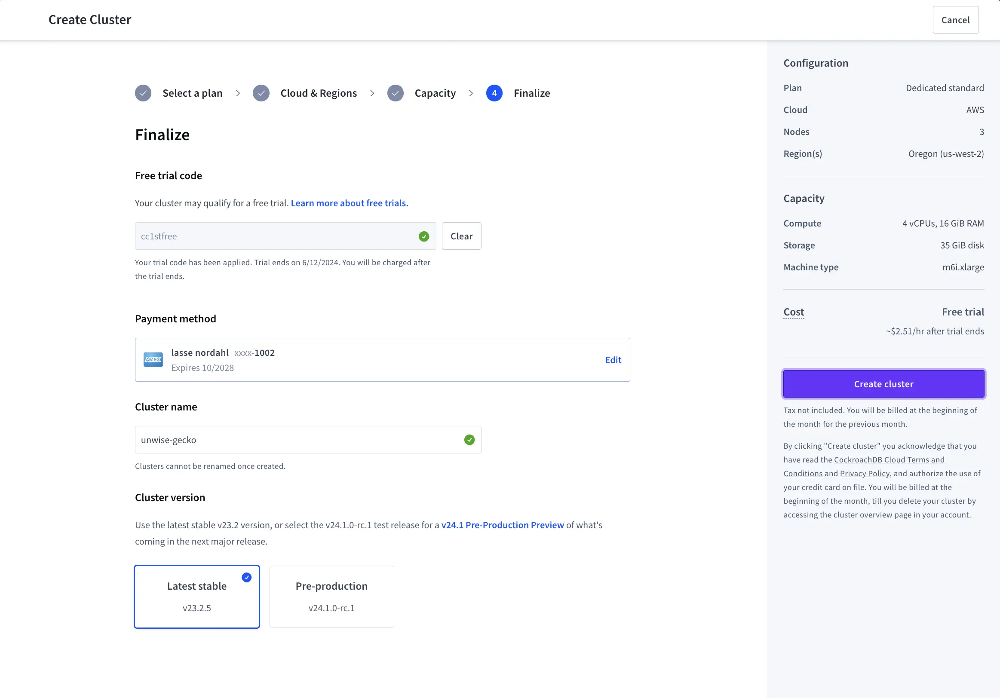

Portfolio
download.zip & david.mov
I've worked on some sites for a blogpost advertising Google's new top-level-domains. These were mostly for fun, and done in a few days.
The screen overlay kinda doesn't work at this iframe dimension. @lasse plz fix.
cockroachlabs.cloud
I currently work on growth, core user facing features, and sql execution in the console at Cockroach Labs.

I worked on launching the SQL Shell as a way of improving first query rates and early user retention. The SQL Shell wound up being one of the most used feature in Cloud, recieving more requests than our ListClusters endpoint.
Theres a blogpost going over most of the features.

Beyond that, I worked on a lot of growth work, including new onboarding flows, free trials, and cluster creation views. Most of that work is relatively full-stack, but I'd generally say I lean frontend in terms of experience/expertise.
 

Papertrail - OCR Research
While working at NYT R&D, I built an OCR tool that used newer CV models to bulk-transcribe newspapers into a digital format.
We initially wanted to explore performance of new OCR models for 3 months, but wound up extending it to a 9 month project since we found out improvements in location data could fully piece-together articles.